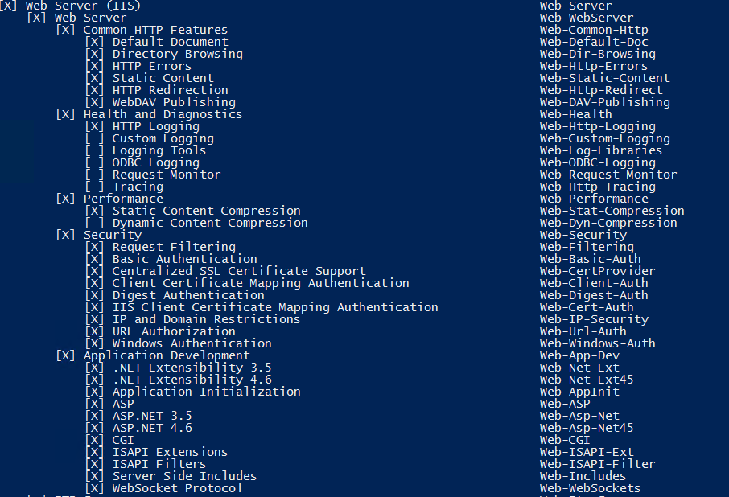
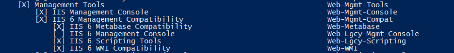
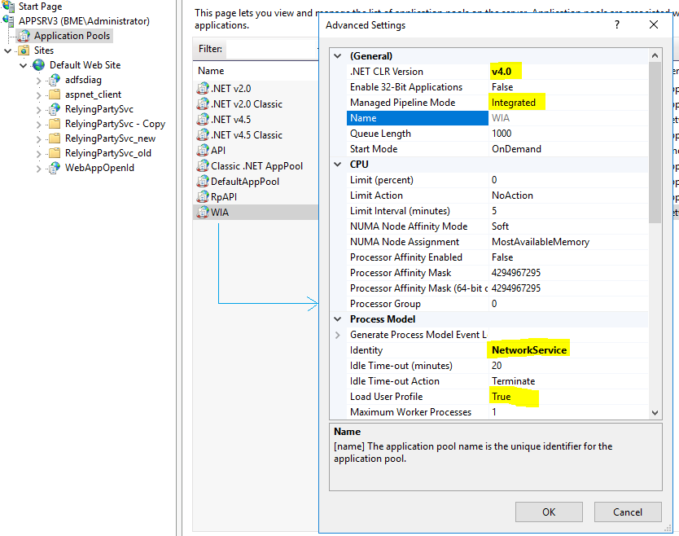
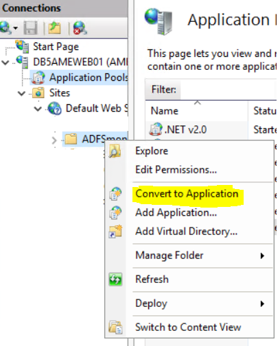

A Windows server machine (physical/virtual) joined to the domain where the target ADFS farm is installed. This machine will act as the web server and will house the ‘adfsdiag’ web tool.
The computer account of the above-mentioned web server needs to be a local administrator on all target ADFS farm Web Application Proxy and ADFS servers.
Install the following roles and features on the web server.


Install Windows Identity Foundation 3.5. ( Important )
Create an Application pool in IIS as follows

Attach an SSL certificate with Default Web site.
Copy the ‘adfsdiag’ web application folder to C:\inetpub\wwwroot on the web server. .\Publish folder contents may also be used.
Expand “Default Web site” in IIS, right click the newly added ‘adfsdiag’ folder and choose “convert to application” , select the application pool created earlier ,click ok.

If you receive error - Failed to update database "C:\INETPUB\WWWROOT\ADFSDIAG\APP_DATA\DATABASE.MDF" because the database is read-only while updating the vip table or farm name under configuration page, browse to C:\INETPUB\WWWROOT\ADFSDIAG\APP_DATA and provide IIS_ISURS(AppServerName\ IIS_ISURS) , modify permissions on the folder and if needed subsequent database and log files.
Current version is built using VS 2017. .Net framework 4.6.2.
You may have to instate SNI wildcard bindings on the target Proxy or ADFS servers
To perform wildcard bindings , insert the binding as follows
netsh http add sslcert ipport=0.0.0.0:443 certhash=fcfc78505073ff9108e6a16e2115ef29255facb3 appid='{5d89a20c-beab-4389-9447-324788eb944a}' certstorename=MY
Where ‘fcfc78505073ff9108e6a16e2115ef29255facb3’ is the thumbprint of the ADFS Service Communication Certificate.
and
appid='{5d89a20c-beab-4389-9447-324788eb944a}' is the value of ‘appid’ returned by ‘netsh http show sslcert’
The current version uses LocalDb. Please update connection strings as needed and SQL version.
Examples of code behind –
string connectionString = @"Data Source=.\SQLEXPRESS;AttachDbFilename=|DataDirectory|\Database.mdf;Integrated Security=True;User Instance=True";
string connectionString = @"Data Source=(LocalDB)\MSSQLLocalDB;AttachDbFilename=|DataDirectory|\Database.mdf;Integrated Security=True";
Example of web.config –
<!--<add name="ApplicationServices" connectionString="data source=.\SQLEXPRESS;Integrated Security=SSPI;AttachDBFilename=|DataDirectory|\aspnetdb.mdf;User Instance=true" providerName="System.Data.SqlClient"/>-->
<add name="ApplicationServices" connectionString="Data Source=(LocalDB)\MSSQLLocalDB;AttachDbFilename=|DataDirectory|\Database.mdf;Integrated Security=True" providerName="System.Data.SqlClient"/>
SQL Table creation queries
CREATE TABLE vip (
id int primary key identity,
Site VARCHAR (8000) NOT NULL,
VIP VARCHAR (8000) NOT NULL,
);
CREATE TABLE dbo.Configuration
( ConfigurationID TINYINT NOT NULL DEFAULT 1,
FarmName VARCHAR (8000),
CONSTRAINT Configuration_PK
PRIMARY KEY (ConfigurationID),
CONSTRAINT Configuration_OnlyOneRow
CHECK (ConfigurationID = 1)
) ;
Taparshi Pandit